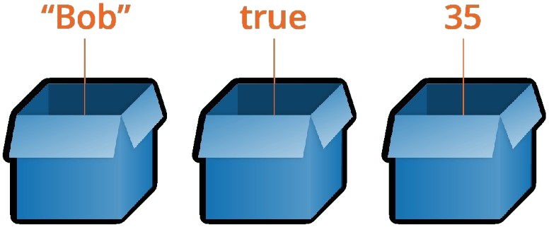
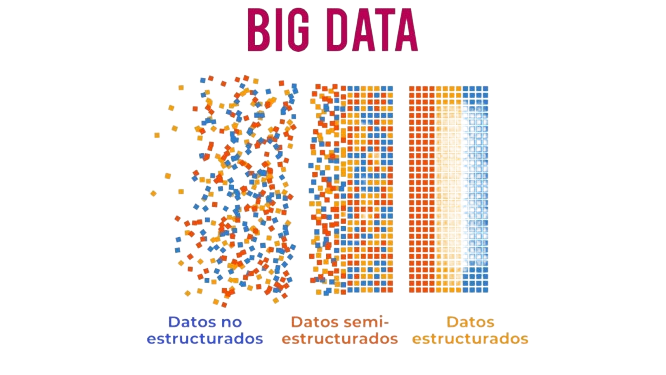

SERVICIO NACIONAL DE APRENDIZAJE SENA
"INTRODUCCIÓN A LAS BASES DE DATOS: CONCEPTOS Y TECNOLOGÍAS"
Una base de datos es un conjunto organizado de datos que se almacenan de manera
estructurada para facilitar su acceso, manipulación y análisis. Las bases de datos
permiten almacenar, modificar y recuperar información de manera eficiente.
TIPOS DE BASE DE DATOS
1. *Bases de datos relacionales*: Utilizan tablas y relaciones entre ellas para almacenar datos.
Ejemplos: MySQL, PostgreSQL.
2. *Bases de datos NoSQL*: No utilizan tablas y relaciones, sino que almacenan datos en formato
de documentos o clave-valor. Ejemplos: MongoDB, Cassandra.
3. *Bases de datos orientadas a objetos*: Almacenan datos en formato de objetos y clases.
Ejemplos: Oracle, DB2.
4. *Bases de datos en memoria*: Almacenan datos en memoria RAM para mejorar el rendimiento.

¿Qué son las variables en una base de datos?
Una variable es un nombre definido por el usuario que representa datos que se pueden modificar en
un flujo de datos o flujo de control . Al configurar variables para determinados recursos, puede
posponer la definición de propiedades críticas hasta una fase posterior en el ciclo de vida de
la aplicación.
Tipos de variables de datos
1. *Variables numéricas*: Enteros, flotantes, decimales.
2. *Variables de texto*: Cadenas de caracteres.
3. *Variables de fecha y hora*: Fechas, horas, timestamps.
4. *Variables booleanas*: Verdadero/Falso.

Estructura de datos
Los datos estructurados están altamente organizados y formateados de tal manera que se pueden buscar
fácilmente en bases de datos relacionales. Los datos no estructurados no tienen un formato u organización
predefinidos, lo que hace que sea mucho más difícil de recopilar, procesar y analizar.
Bodegas de datos (Data Warehouses)
Unidades centrales de almacenamiento de datos que recopilan información de varias fuentes para análisis y toma
de decisiones.
*Tecnología de Big Data*
Herramientas y técnicas para procesar y analizar grandes cantidades de datos:
1. *Hadoop*: Framework de procesamiento distribuido.
2. *Spark*: Motor de procesamiento en memoria.
3. *NoSQL*: Bases de datos diseñadas para manejar grandes volúmenes de datos.
*Capa de alimentación (Data Feed)*
Proceso de ingreso de datos en una base de datos:
1. *Ingesta de datos*: Proceso de recopilación de datos.
2. *Transformación de datos*: Proceso de conversión de datos.
3. *Carga de datos*: Proceso de inserción de datos en la base de datos.
*Conclusión*
Las bases de datos son fundamentales para almacenar y procesar información en la era digital.
Entender los conceptos y tecnologías detrás de las bases de datos es crucial para cualquier
profesional en el campo de la tecnología.